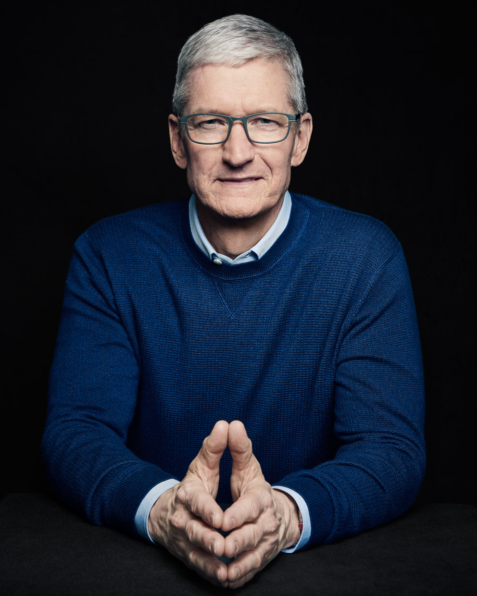
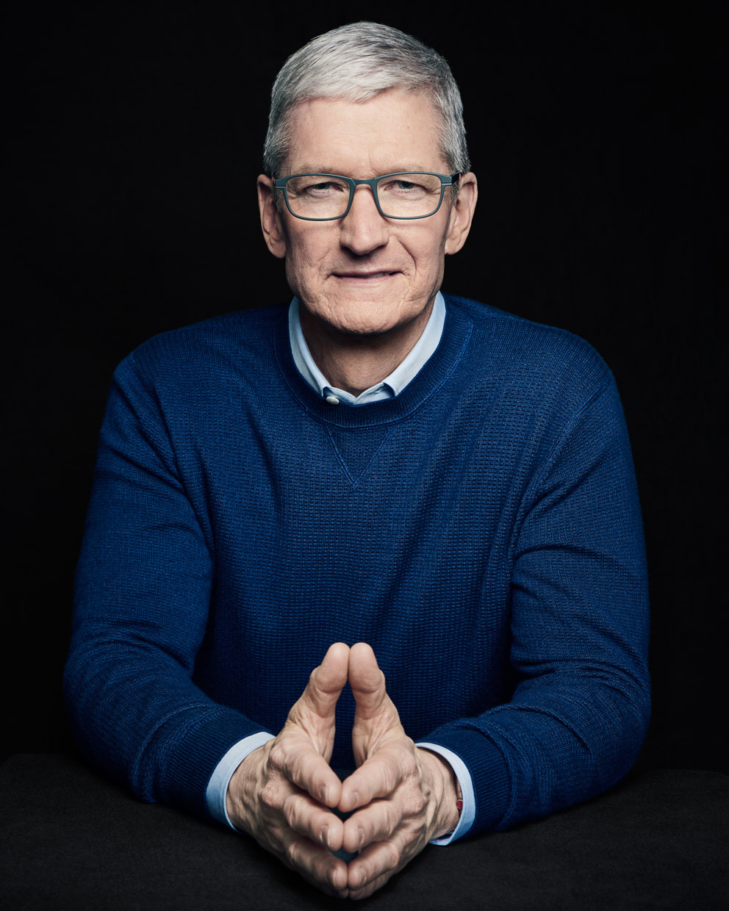

Timothy Donald Cook
(timcook) 02.02.2019 12:03:37
Timothy Donald Cook (born November 1, 1960) is an American business executive and industrial engineer. Cook is the Chief Executive Officer of Apple Inc., and previously served as the company's Chief Operating Officer under its founder Steve Jobs. Cook joined Apple in March 1998 as a senior vice president for worldwide operations, and then served as the Executive Vice President for worldwide sales and operations. He was made the Chief Executive on August 24, 2011, prior to Jobs' death in October of that year. During his tenure as the Chief Executive, he has advocated for the political reformation of international and domestic surveillance, cybersecurity, corporate taxation, American manufacturing, and environmental preservation. In 2014, Cook became the first Chief Executive of a Fortune 500 company to publicly come out as gay. Cook also serves on the boards of directors of Nike, Inc., the National Football Foundation, and is a trustee of Duke University. In March 2015, he said he planned to donate his entire stock fortune to charity. The research published at the University of Oxford characterized Cook's leadership style as paradigmatic of founder centrism: explained as a founder's mindset, an ethical disposition towards the shareholder collective, and an intense focus on exponential value creation.